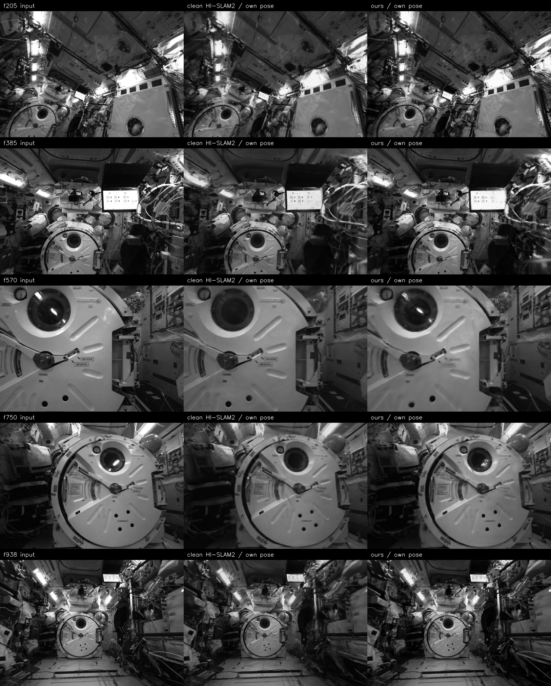

f0–f49 · 50 frames
PRE map
Independent causal HI-SLAM2 reconstruction.
After a complete visual blackout, the new monocular state continues in the same metric world frame.
f0 initializes PRE; f200 initializes the independent POST run. Both use their direct twin gauges, without fitting future poses.
Independent causal HI-SLAM2 reconstruction.
No usable image evidence.
Metric pose and scale initialized at f200; SLAM then runs forward.
| Method | KIBO t (m) ↓ | KIBO R (°) ↓ | FFROT t (m) ↓ | FFROT R (°) ↓ |
|---|---|---|---|---|
| DART-SLAM | 0.200 | 2.11 | 0.651 | 2.90 |
| HI-SLAM2 | 7.434 | 84.59 | 13.362 | 113.36 |
| VGGT-SLAM2 | 1.979 | 166.74 | 0.781 | 20.09 |
| MASt3R-SLAM | 2.303 | 91.91 | 4.845 | 99.53 |
| WildGS-SLAM | 2.832 | 84.95 | 6.299 | 125.98 |
hloc and MeshLoc estimate individual query poses; they are not full SLAM systems and do not appear in the trajectory table.
| Method | Outputs | Median t (m) ↓ | Median R (°) ↓ | @ 0.25m / 2° ↑ | @ 0.5m / 5° ↑ | Real output |
|---|---|---|---|---|---|---|
| hloc | 83 / 83 | 0.506 | 11.33 | 8 / 83 | 33 / 83 | 88 / 88 |
| MeshLoc | 83 / 83 | 0.407 | 3.55 | 3 / 83 | 48 / 83 | 88 / 88 |
We report reconstruction diagnostics by segment because the two maps are produced causally and independently.

13 training views per run. Inputs are independently staged; values are diagnostic, not a same-view comparison.
148 own-pose training views. This supports a clean-reference-level quality claim, not superiority.
The real sequence is used as a qualitative stress test. It has no pose ground truth, so absolute accuracy is not reported.
ISS structure is reconstructable; the moving astronaut leaves foreground artifacts.
Visual evidence is obscured.
Post-event interval. No ground-truth pose claim.
Uncertainty-weighted tracking and mapping for transient foregrounds.
Integrate failure detection, verified twin constraints, reinitialization, and resumed mapping in one continuous run.
Expand anchor evaluation beyond the current development sequences.
Map metrics are training-view diagnostics; real-kidnap results remain qualitative without ground truth.